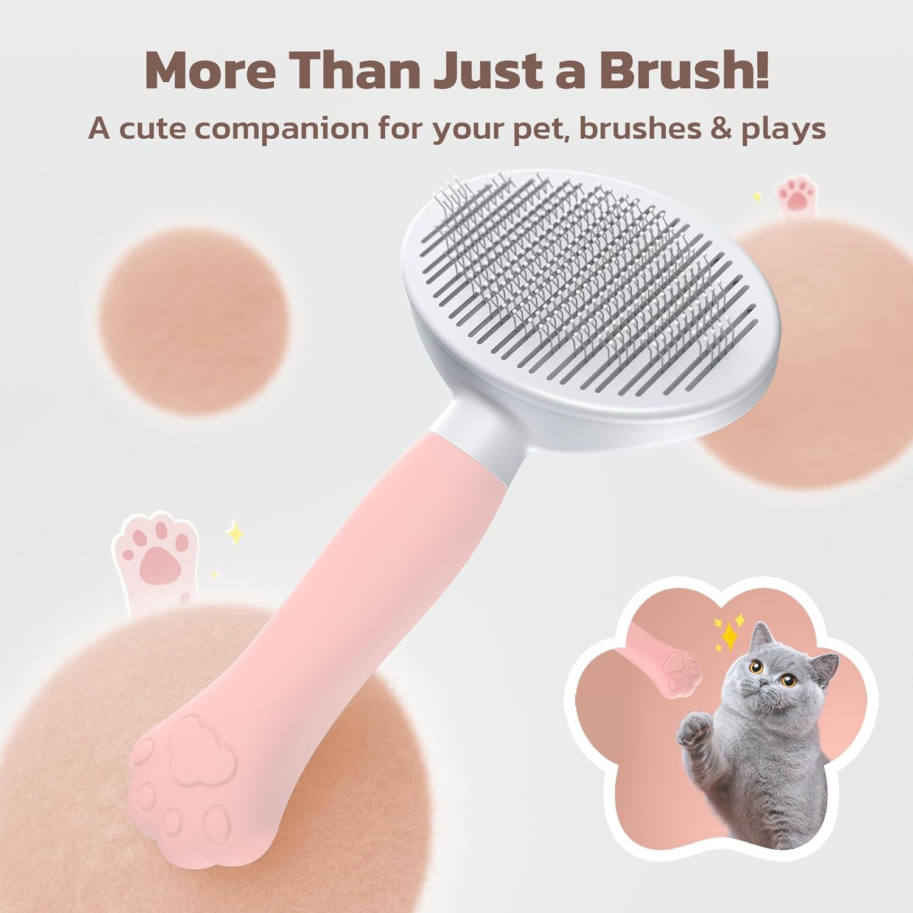

Nuestros Productos
Collar para perro

$5.99
Collar para perros de cuero de gamuza suave y deslizamiento en placas de identificación Grabado gratis para perros pequeños.
Arbol para Gato

$ 45.99
Rascador para gatos en elegante gris es mucho más que un simple accesorio: es un paraíso de entretenimiento y comodidad para tu felino. Dimensiones de aproximadamente 65 x 35 x 130 cm, múltiples niveles.
Collar para Gato
5.99
Mantén a tu gato seguro, elegante y cómodo con nuestro collar "Love Heart Print". Es la elección perfecta para aquellos que buscan una combinación de estilo y funcionalidad.
Comida pra gato Gati

$ 4.50
GATI MAR Y TIERRA ofrece a tu gato una dieta completa y balanceada, cumpliendo con los requerimientos nutricionales para todas las etapas de vida de tu mascota.
Shampoo Lessie
$3.15
Mantén a tu perro limpio, saludable y protegido con nuestro shampoo. No solo te ayudará a mantener su pelaje en perfectas condiciones, sino que también será una herramienta eficaz en la lucha contra pulgas, garrapatas, piojos y ácaros que podrían afectar su bienestar.
Comida para perro Dogui
$6,49
comida para perros con sabor a pollo es la elección perfecta para los dueños de mascotas que desean proporcionar una alimentación de alta calidad y deliciosa para sus amigos caninos adultos.
Sepillo quita pelo
$ 6.99
Nuestro cepillo quitapelos mascotas está diseñado pensando en tu comodidad. El agarre ergonómico fácil de usar garantiza que el cepillo sea fácil de sostener y antideslizante, facilitando tus sesiones de aseo de mascotas.
Nuedo de algodon
$ 1.95
nudo de algodón Arquivet de 15 cm es mucho más que un simple juguete para tu fiel compañero canino. Este mordedor tirador y juguete interactivo es un accesorio canino imprescindible que proporciona diversión, ejercicio y beneficios para la salud dental de tu perro.